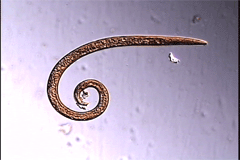
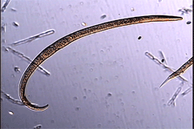

Cylindrolaimus melancholicus
Virtual specimen prepared by Melissa Yoder and Paul De Ley
Click here for the scale bars
Click on the appropriate triangle in the image below to open the relevant clip.

Adult Male

Adult Female
Copyright 2002